Chapter 4 Exploratory Data Analysis
Having learnt the basic of R as well as 2 of the most famous packges in R, namely dplyr and ggplot2, we are adequately equip to perfrom simple Exploratory Data Analysis (EDA).
Exploratory data analysis is the process by which we look at the data that we have, draw a fews plots so as to gain a few insight into the data that we have at hand.
This differs from the classical types of analysis where we apply some statistical function to gain some understanding of the data.
This means that modelling come after the analysis during EDA. whereas it’s the opposite for the typical analysis.
4.1 Movies
We will be exploring the IMDB Movies Datasets taken from https://www.kaggle.com/, which houses many free online datasets.
To get started, lets first initialised our environment by loading the required packages and importing the data sets.
4.2 Initialise your environment
Install the following package
# you only need to install it once
install.packages("dplyr")
install.packages("ggplot2")Load the packages into RStudio
library(dplyr)
library(ggplot2)Both packages comes with a few loaded packages.
To check them out simply type the following command
data(package = "dplyr")
data(package = "ggplot2")To show all the available function within both package,
ls("package:dplyr")
ls("package:ggplot2")4.3 Import the Dataset
Before we can import the Data Sets, we have to ensure the the .csv file is the same project folder. we can first check if we are in the correct directory by using getwd()
# check if the dataset is in the same project folder
getwd()If it is not in the same project folder, we can set it manually by passing the correct path into the function setwd().
setwd(" ")Once these are settled, we can import the datasets using the read.csv() function.
movies <- read.csv("movie_metadata.csv", strip.white = TRUE) %>% as_data_frame()
movies## # A tibble: 5,043 x 28
## color director_name num_critic_for_reviews duration
## <fctr> <fctr> <int> <int>
## 1 Color James Cameron 723 178
## 2 Color Gore Verbinski 302 169
## 3 Color Sam Mendes 602 148
## 4 Color Christopher Nolan 813 164
## 5 Doug Walker NA NA
## 6 Color Andrew Stanton 462 132
## 7 Color Sam Raimi 392 156
## 8 Color Nathan Greno 324 100
## 9 Color Joss Whedon 635 141
## 10 Color David Yates 375 153
## # ... with 5,033 more rows, and 24 more variables:
## # director_facebook_likes <int>, actor_3_facebook_likes <int>,
## # actor_2_name <fctr>, actor_1_facebook_likes <int>, gross <int>,
## # genres <fctr>, actor_1_name <fctr>, movie_title <fctr>,
## # num_voted_users <int>, cast_total_facebook_likes <int>,
## # actor_3_name <fctr>, facenumber_in_poster <int>, plot_keywords <fctr>,
## # movie_imdb_link <fctr>, num_user_for_reviews <int>, language <fctr>,
## # country <fctr>, content_rating <fctr>, budget <dbl>, title_year <int>,
## # actor_2_facebook_likes <int>, imdb_score <dbl>, aspect_ratio <dbl>,
## # movie_facebook_likes <int>View(movies)We can do some prelimanry check on the attributes of the datasets
class(sales)
dim(sales)
names(sales)
str(sales)
glimpse(sales) # dplyr method4.4 IMDB Scores VS Number of faces in movies poster
Imdb score vs number of face in poster
ggplot(data = movies, mapping = aes(x = imdb_score, y = facenumber_in_poster)) +
geom_col()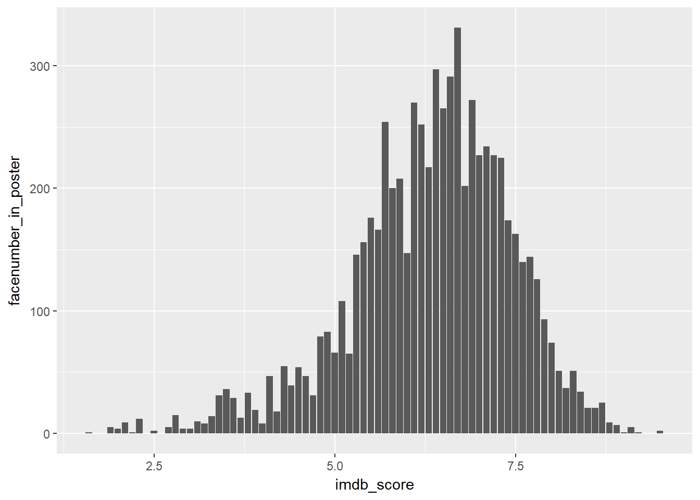
Proportion of movies against imdb score
ggplot(data = movies, mapping = aes(x = imdb_score, y = ..prop..)) +
geom_bar()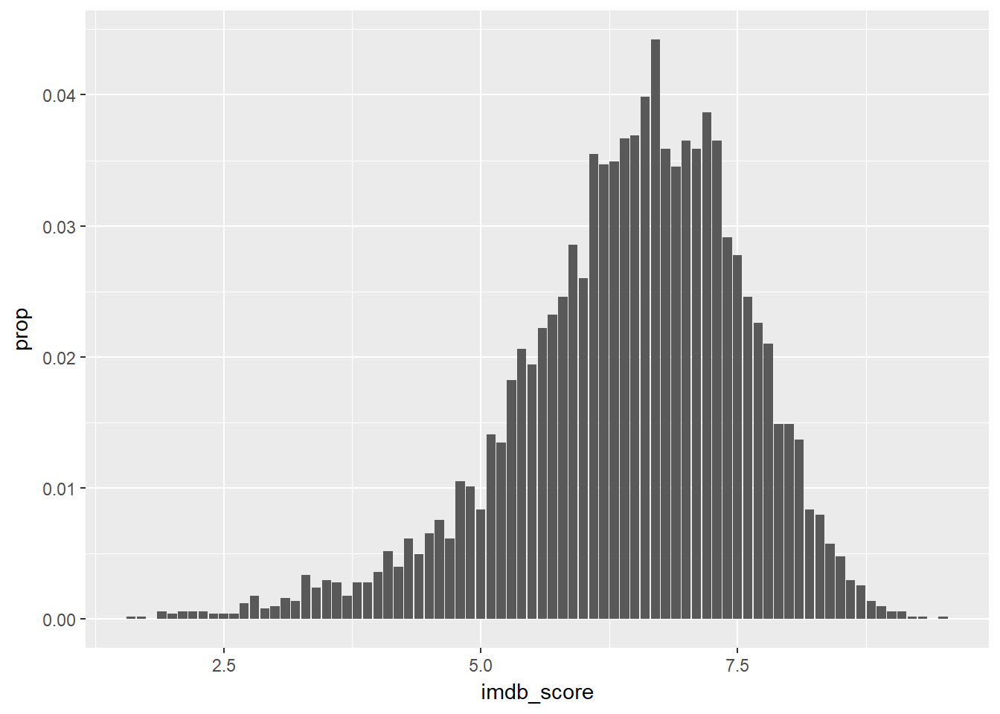
Histogram of the number of human faces in movies poster
movies %>%
select(movie_title, facenumber_in_poster, imdb_score) %>%
group_by(imdb_score) %>%
summarise(total_face = sum(facenumber_in_poster, na.rm = TRUE)) %>%
mutate(prob = total_face / sum(total_face, na.rm = TRUE)) %>%
ggplot(mapping = aes(x = imdb_score, y = total_face)) +
geom_col(width = 1) +
ggtitle("Histogram of the number of human faces in movies poster")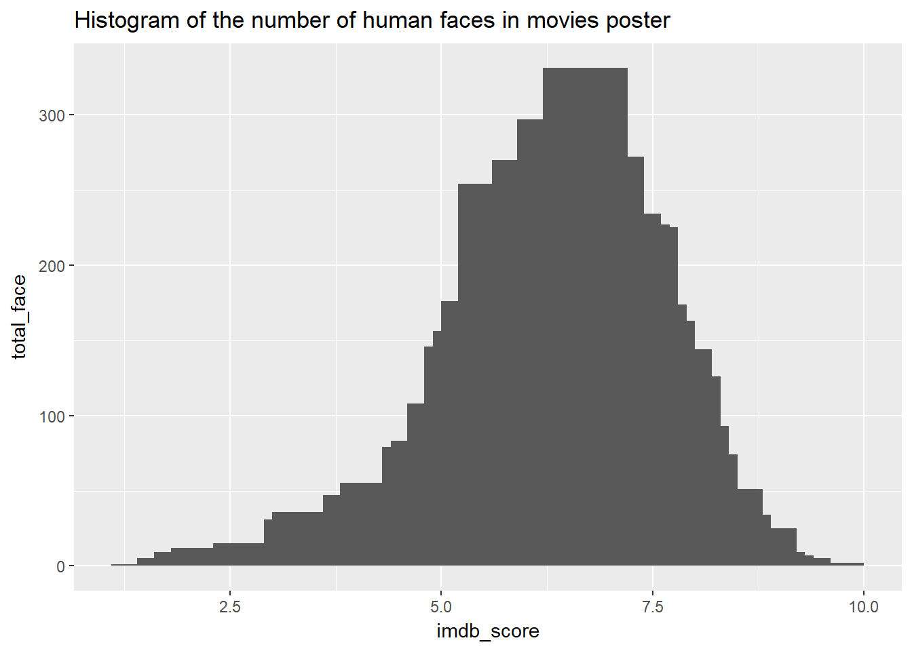
However plotting the face number vs imdb score directly in a bar chart doesnt seems to be a good estimate. Lets first filter out a particular movie rating, say 7.5, and count the number of faces in the poster.
movies %>%
select(movie_title, facenumber_in_poster, imdb_score) %>%
filter(imdb_score == 7.5) %>%
group_by(facenumber_in_poster) %>%
count() %>%
ggplot(mapping = aes(x = facenumber_in_poster, y = n)) +
geom_col()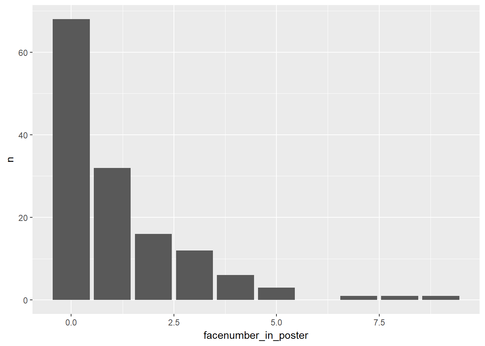
Alternatively, we can also do it the following way
movies %>%
select(movie_title, facenumber_in_poster, imdb_score) %>%
filter(imdb_score == 7.5) %>%
ggplot() +
geom_bar(mapping = aes(x = facenumber_in_poster))However, if we were to plot a scatter plot instead, we get a different insight.
ggplot(data = movies, mapping = aes(x = imdb_score, y = facenumber_in_poster)) +
geom_point()## Warning: Removed 13 rows containing missing values (geom_point).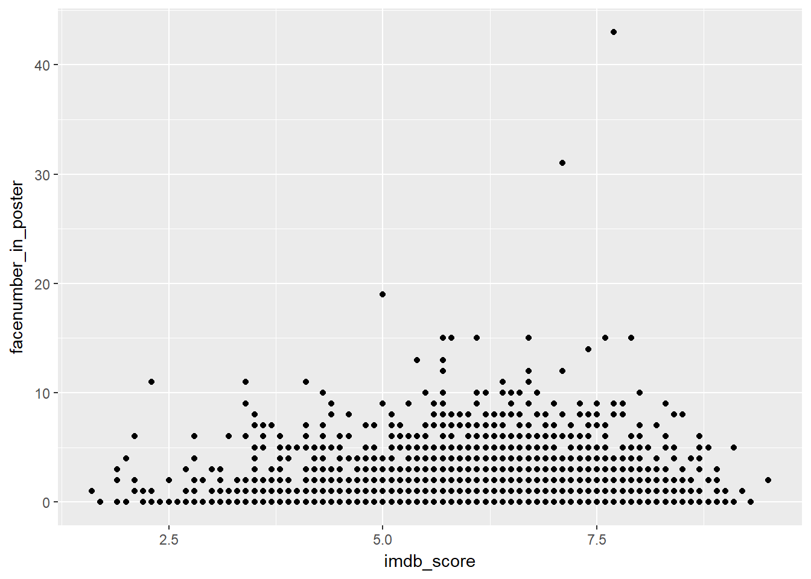
Infact if we were to draw a linear model though it,
ggplot(data = movies, mapping = aes(x = imdb_score, y = facenumber_in_poster)) +
geom_point() +
geom_smooth(method = "lm")## Warning: Removed 13 rows containing non-finite values (stat_smooth).## Warning: Removed 13 rows containing missing values (geom_point).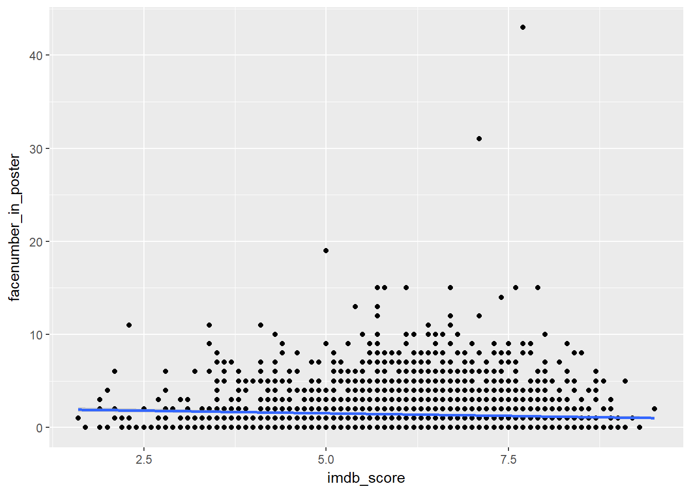
We can do a simple statistic to calculate to correlation coefficient, which is infact negatively related. showing no relationship at all.
movies %>%
select(facenumber_in_poster, imdb_score) %>%
lm(formula = facenumber_in_poster ~ imdb_score)##
## Call:
## lm(formula = facenumber_in_poster ~ imdb_score, data = .)
##
## Coefficients:
## (Intercept) imdb_score
## 2.0975 -0.11274.5 IMDB Scores VS Country
Lets find the score for the top 10 country
First, we list the top 10 country that produces movies
top_10_country <- movies %>%
group_by(country) %>%
summarise(count = n()) %>%
top_n(10) %>%
arrange(desc(count))
top_10_country## # A tibble: 11 x 2
## country count
## <fctr> <int>
## 1 USA 3807
## 2 UK 448
## 3 France 154
## 4 Canada 126
## 5 Germany 97
## 6 Australia 55
## 7 India 34
## 8 Spain 33
## 9 China 30
## 10 Italy 23
## 11 Japan 23Next, we filter out all top 10 countries that produces movies
countries <- movies %>%
select(country, imdb_score, gross) %>%
filter(country %in% top_10_country$country)
countries## # A tibble: 4,830 x 3
## country imdb_score gross
## <fctr> <dbl> <int>
## 1 USA 7.9 760505847
## 2 USA 7.1 309404152
## 3 UK 6.8 200074175
## 4 USA 8.5 448130642
## 5 USA 6.6 73058679
## 6 USA 6.2 336530303
## 7 USA 7.8 200807262
## 8 USA 7.5 458991599
## 9 UK 7.5 301956980
## 10 USA 6.9 330249062
## # ... with 4,820 more rowsFinally, we draw a scatter plot of all the movies produces by each of the top 10 countries.
ggplot(data = countries, mapping = aes(x = imdb_score, y = gross)) +
geom_point(aes(colour = country)) +
facet_wrap(~ country)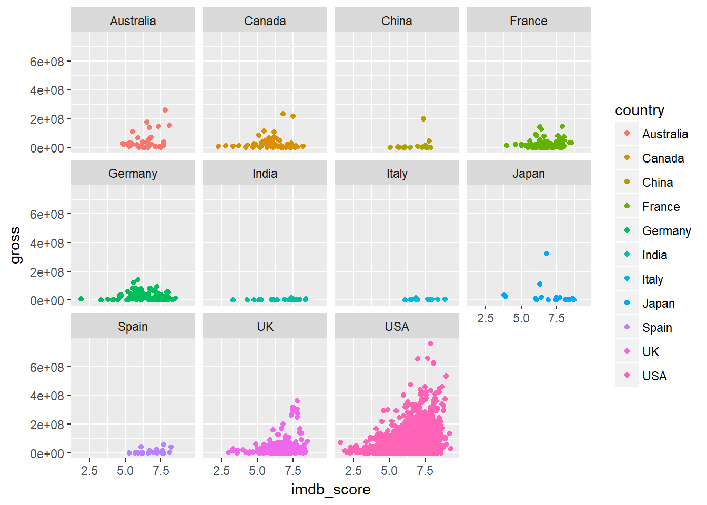
Similarly we can also draw a boxplot. We can see that although USA and UK are the top produces of movies, they too produce lots of low rated movies as well.
ggplot(data = countries, mapping = aes(x = country, y = imdb_score)) +
geom_boxplot()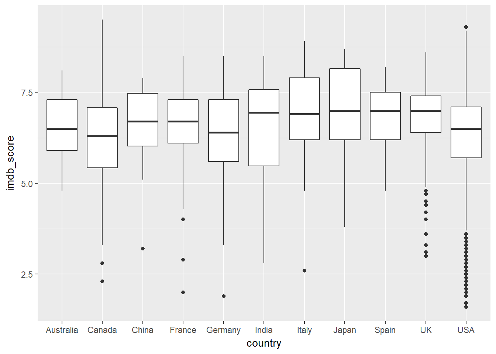
4.6 IMDB Scores VS Movies year
Lets draw a simple boxplot for all movies all year
ggplot(data = movies, mapping = aes(x = factor(title_year), y = imdb_score)) +
geom_boxplot()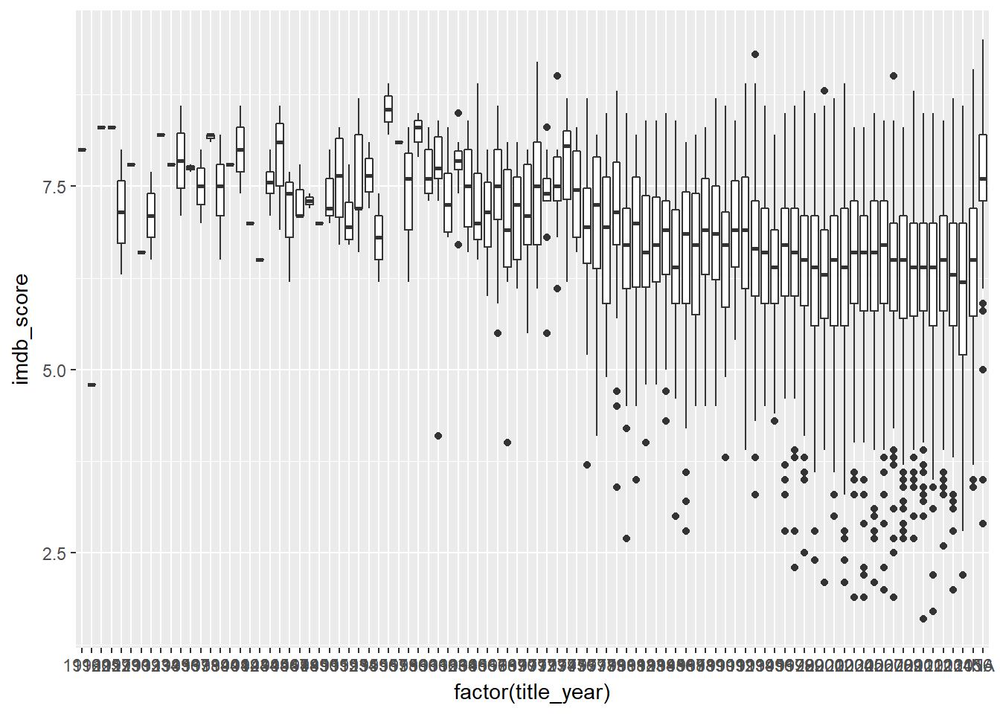
Lts scope in to all the movies after 1965
year <- movies %>%
select(title_year, imdb_score, gross) %>%
filter(title_year >= 1965) %>%
arrange(title_year)
year## # A tibble: 4,827 x 3
## title_year imdb_score gross
## <int> <dbl> <int>
## 1 1965 6.6 8000000
## 2 1965 8.0 111722000
## 3 1965 7.0 63600000
## 4 1965 8.0 163214286
## 5 1965 6.8 14873
## 6 1965 7.3 NA
## 7 1965 7.7 NA
## 8 1965 8.4 NA
## 9 1966 7.9 NA
## 10 1966 7.0 NA
## # ... with 4,817 more rowsFiltered box plot for all movies after 1965 only
ggplot(data = year, mapping = aes(x = factor(title_year), y = imdb_score)) +
geom_boxplot()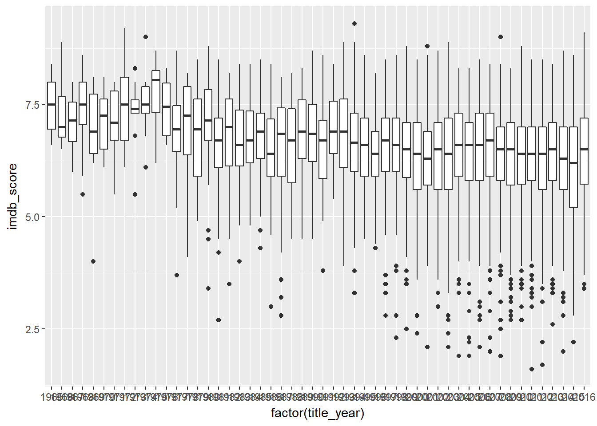
4.7 IMDB Scores VS Movie Facebook Popularity
Basic plot of imdb score vs movie facebook like.
ggplot(data = movies, mapping = aes(x = imdb_score, y = movie_facebook_likes)) +
geom_point() Looking at the plot, what if we instead what to show the proportion of movies created by the top 10 countries against the total movies available? Meaning, we want to have 10 subplots of the top 10 countrys only with the backdrop of the above plot?
The following steps allow us to do so.
- We filter out those country thats lies in the top 10 range.
facebook_pop <- movies %>%
select(country, movie_title, imdb_score, movie_facebook_likes) %>%
filter(country %in% top_10_country$country); facebook_pop## # A tibble: 4,830 x 4
## country movie_title imdb_score
## <fctr> <fctr> <dbl>
## 1 USA Avatar 7.9
## 2 USA Pirates of the Caribbean: At World's End 7.1
## 3 UK Spectre 6.8
## 4 USA The Dark Knight Rises 8.5
## 5 USA John Carter 6.6
## 6 USA Spider-Man 3Â 6.2
## 7 USA Tangled 7.8
## 8 USA Avengers: Age of Ultron 7.5
## 9 UK Harry Potter and the Half-Blood Prince 7.5
## 10 USA Batman v Superman: Dawn of Justice 6.9
## # ... with 4,820 more rows, and 1 more variables:
## # movie_facebook_likes <int>- Next we plot all the points with country that are in the top 10 only.
ggplot(data = facebook_pop, mapping = aes(x = imdb_score, y = movie_facebook_likes)) +
geom_point()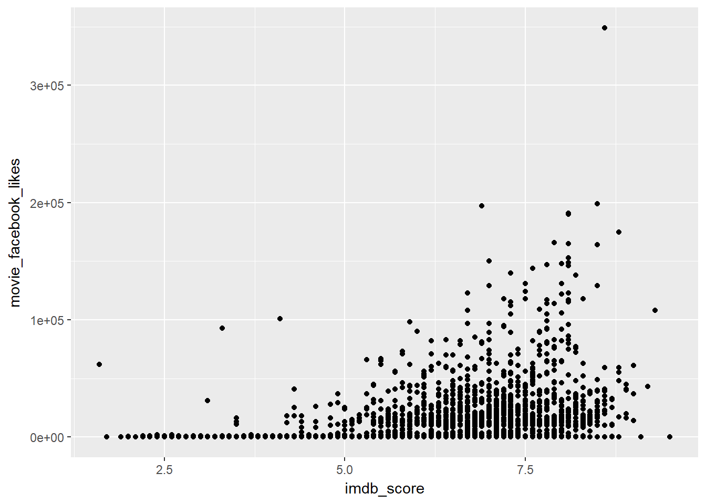
- Say we want to facet the plot to show the points specific to each country
ggplot(data = facebook_pop, mapping = aes(x = imdb_score, y = movie_facebook_likes)) +
geom_point() +
facet_wrap( ~ country)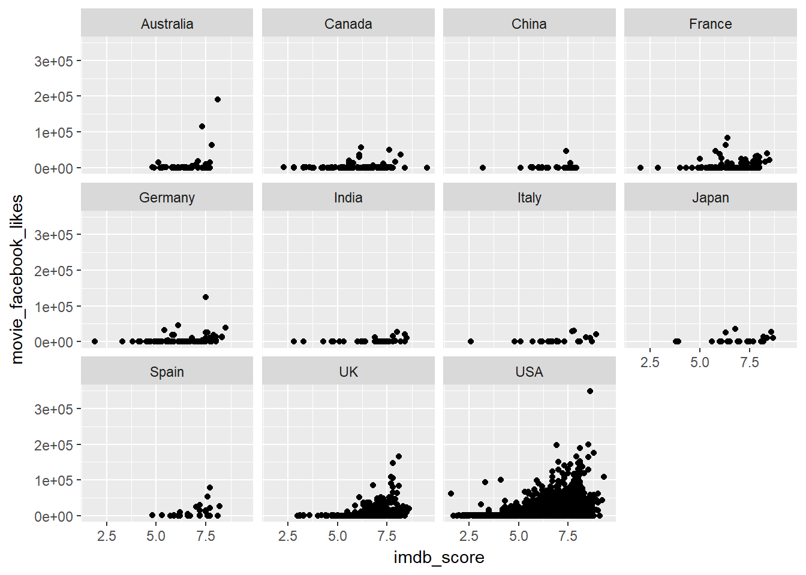
- what if we want to add a grey backdrop point behind every facet to see which points out of the original belong to which country
ggplot(data = facebook_pop, mapping = aes(x = imdb_score, y = movie_facebook_likes)) +
geom_point(data = mutate(movies, country = NULL), colour = "grey65") +
geom_point() +
facet_wrap( ~ country)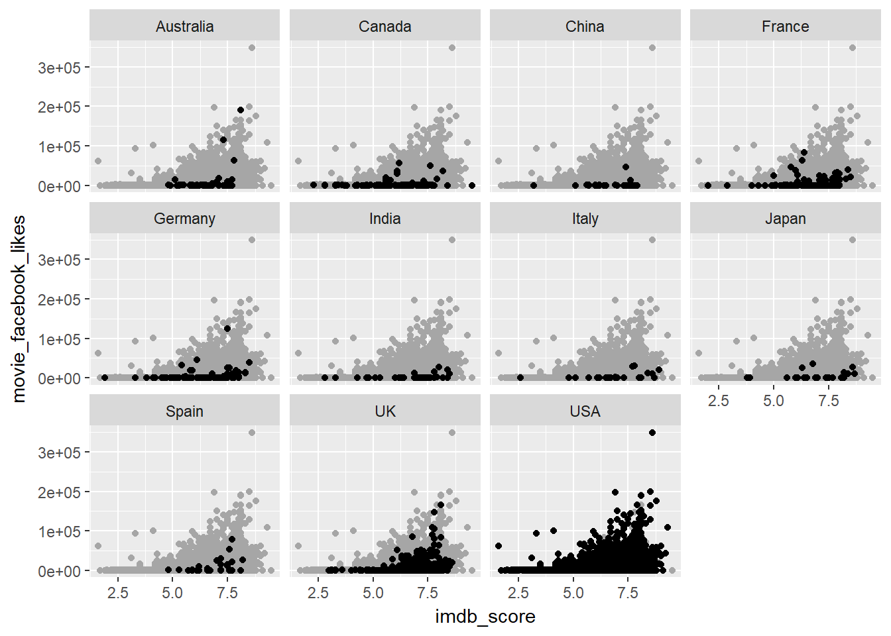
- Lastly to add a different colour to each facets,
ggplot(data = facebook_pop, mapping = aes(x = imdb_score, y = movie_facebook_likes)) +
geom_point(data = mutate(movies, country = NULL), colour = "grey65") +
geom_point(aes(colour = country)) +
facet_wrap( ~ country) 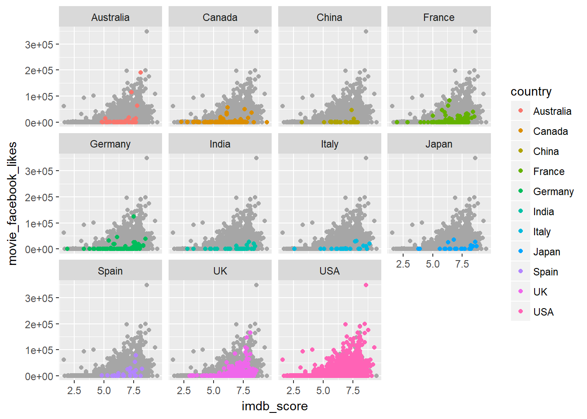
4.8 IMDB score VS Director Facebook Popularity
Basic plot of imdb score vs director facebook likes.
ggplot(data = movies, mapping = aes(x = imdb_score, y = director_facebook_likes)) +
geom_point()## Warning: Removed 104 rows containing missing values (geom_point).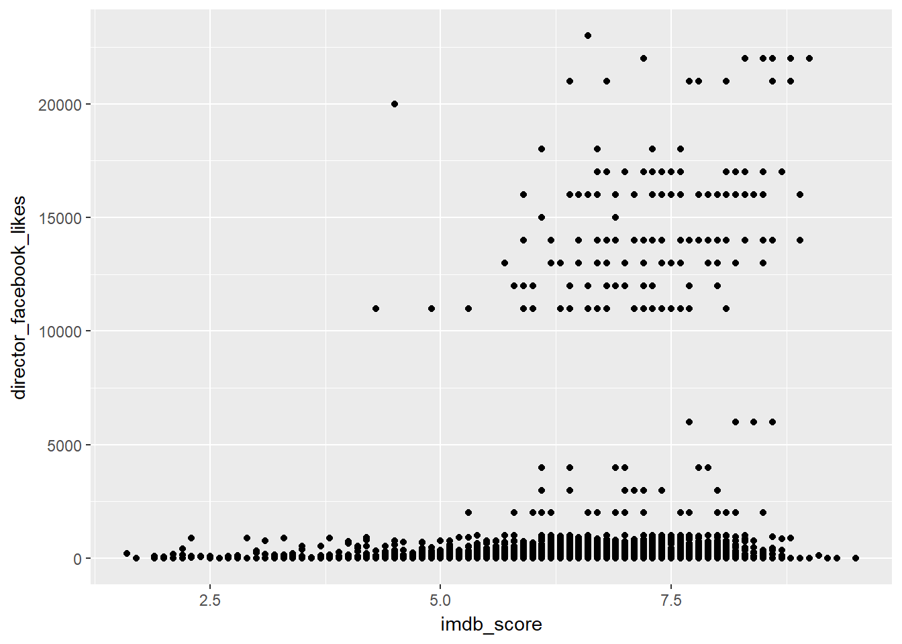
Lets filtering out the Top N Director with facebook likes above 10K
top_n_director <- movies %>%
select(director_name, director_facebook_likes) %>%
arrange(desc(director_facebook_likes), director_name) %>%
distinct() %>%
filter(director_facebook_likes >= 10000)
top_n_director## # A tibble: 21 x 2
## director_name director_facebook_likes
## <fctr> <int>
## 1 Joseph Gordon-Levitt 23000
## 2 Christopher Nolan 22000
## 3 David Fincher 21000
## 4 Derick Martini 20000
## 5 Denzel Washington 18000
## 6 Kevin Spacey 18000
## 7 Martin Scorsese 17000
## 8 Clint Eastwood 16000
## 9 Quentin Tarantino 16000
## 10 Tom Hanks 15000
## # ... with 11 more rowsSort out the top director and their movies
direc_fb_pop <- movies %>%
select(movie_title, director_name, director_facebook_likes, imdb_score) %>%
arrange(desc(director_facebook_likes), director_name, desc(imdb_score), movie_title) %>%
filter(director_name %in% top_n_director$director_name); direc_fb_pop## # A tibble: 181 x 4
## movie_title director_name director_facebook_likes
## <fctr> <fctr> <int>
## 1 Don Jon Joseph Gordon-Levitt 23000
## 2 The Dark Knight Christopher Nolan 22000
## 3 Inception Christopher Nolan 22000
## 4 Interstellar Christopher Nolan 22000
## 5 Memento Christopher Nolan 22000
## 6 The Dark Knight Rises Christopher Nolan 22000
## 7 The Prestige Christopher Nolan 22000
## 8 Batman Begins Christopher Nolan 22000
## 9 Insomnia Christopher Nolan 22000
## 10 Fight Club David Fincher 21000
## # ... with 171 more rows, and 1 more variables: imdb_score <dbl>A plot showing only the director with likes above 10K in colour
ggplot(data = direc_fb_pop, mapping = aes(x = imdb_score, y = director_facebook_likes)) +
geom_point(data = movies, mapping = aes(x = imdb_score, y = director_facebook_likes)) +
geom_point(mapping = aes(colour = factor(director_name), size = 5)) ## Warning: Removed 104 rows containing missing values (geom_point).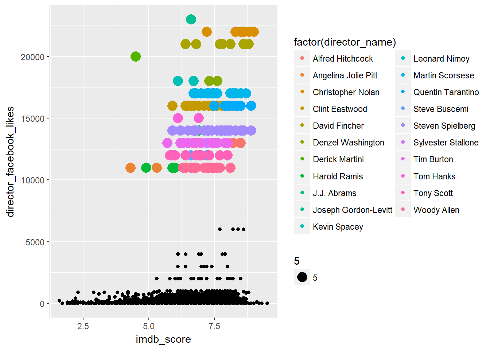
To list out the top 4 movies for each director above 10K likes
direc_fb_pop %>%
group_by(director_name) %>%
top_n(4)## Selecting by imdb_score## # A tibble: 71 x 4
## # Groups: director_name [21]
## movie_title director_name director_facebook_likes
## <fctr> <fctr> <int>
## 1 Don Jon Joseph Gordon-Levitt 23000
## 2 The Dark Knight Christopher Nolan 22000
## 3 Inception Christopher Nolan 22000
## 4 Interstellar Christopher Nolan 22000
## 5 Memento Christopher Nolan 22000
## 6 The Dark Knight Rises Christopher Nolan 22000
## 7 The Prestige Christopher Nolan 22000
## 8 Fight Club David Fincher 21000
## 9 Se7en David Fincher 21000
## 10 Gone Girl David Fincher 21000
## # ... with 61 more rows, and 1 more variables: imdb_score <dbl>So why is Joseph Gordan levitt rank above Christopher Nolan? Lets add new variables like actor 1 name and actor 1 facebook likes. we can see that Joseph Gordan levitt facebook likes is actually equal to its director facebook like, hence making him rank higher than Christopher Nolan
movies %>%
select(movie_title,
director_name,
director_facebook_likes,
actor_1_name,
actor_1_facebook_likes,
imdb_score) %>%
arrange(desc(director_facebook_likes),
director_name,
desc(imdb_score),
movie_title) %>%
filter(director_name %in% top_n_director$director_name)## # A tibble: 181 x 6
## movie_title director_name director_facebook_likes
## <fctr> <fctr> <int>
## 1 Don Jon Joseph Gordon-Levitt 23000
## 2 The Dark Knight Christopher Nolan 22000
## 3 Inception Christopher Nolan 22000
## 4 Interstellar Christopher Nolan 22000
## 5 Memento Christopher Nolan 22000
## 6 The Dark Knight Rises Christopher Nolan 22000
## 7 The Prestige Christopher Nolan 22000
## 8 Batman Begins Christopher Nolan 22000
## 9 Insomnia Christopher Nolan 22000
## 10 Fight Club David Fincher 21000
## # ... with 171 more rows, and 3 more variables: actor_1_name <fctr>,
## # actor_1_facebook_likes <int>, imdb_score <dbl>4.9 Correlation analysis
We are going to extract out all the columns that are numeric only.
movies_num <- movies %>%
select(imdb_score,
director_facebook_likes,
cast_total_facebook_likes,
num_critic_for_reviews,
duration,
num_voted_users,
actor_1_facebook_likes,
actor_2_facebook_likes,
actor_3_facebook_likes,
movie_facebook_likes,
facenumber_in_poster,
title_year,
gross,
budget)
movies_num## # A tibble: 5,043 x 14
## imdb_score director_facebook_likes cast_total_facebook_likes
## <dbl> <int> <int>
## 1 7.9 0 4834
## 2 7.1 563 48350
## 3 6.8 0 11700
## 4 8.5 22000 106759
## 5 7.1 131 143
## 6 6.6 475 1873
## 7 6.2 0 46055
## 8 7.8 15 2036
## 9 7.5 0 92000
## 10 7.5 282 58753
## # ... with 5,033 more rows, and 11 more variables:
## # num_critic_for_reviews <int>, duration <int>, num_voted_users <int>,
## # actor_1_facebook_likes <int>, actor_2_facebook_likes <int>,
## # actor_3_facebook_likes <int>, movie_facebook_likes <int>,
## # facenumber_in_poster <int>, title_year <int>, gross <int>,
## # budget <dbl>There are various methods to draw correlation plots:
pairs()from base R
pairs(movies_num)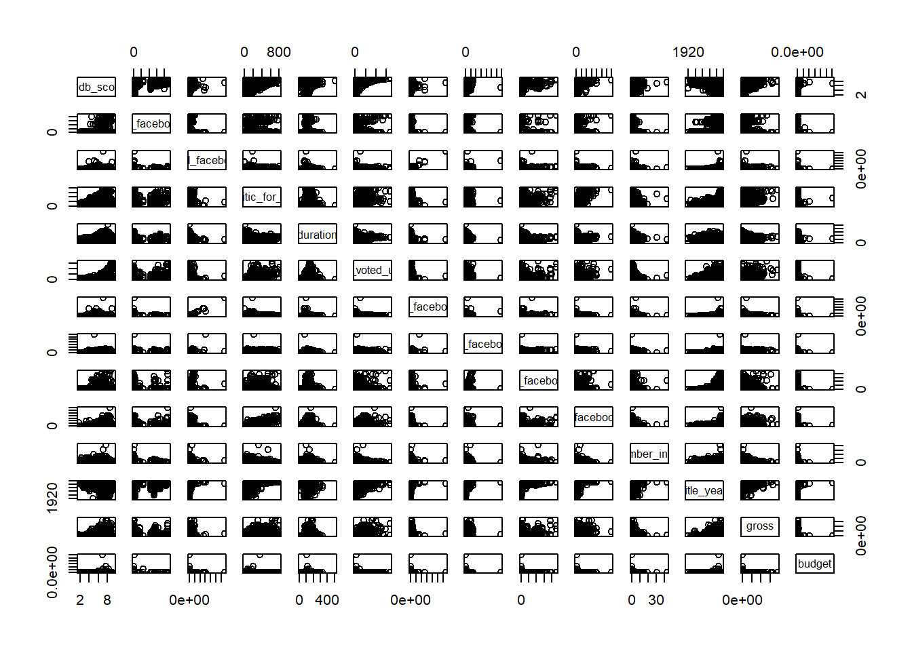
corrplot()from corrplot package
install.packages("corrplot")library(corrplot)M <- cor(movies_num, use = "complete.obs") # complete.obs removes all the NA's
M## imdb_score director_facebook_likes
## imdb_score 1.00000000 0.18987519
## director_facebook_likes 0.18987519 1.00000000
## cast_total_facebook_likes 0.10531945 0.12059873
## num_critic_for_reviews 0.34143593 0.17977707
## duration 0.35983137 0.18098298
## num_voted_users 0.47411454 0.30228315
## actor_1_facebook_likes 0.09225238 0.09128625
## actor_2_facebook_likes 0.10193664 0.11812015
## actor_3_facebook_likes 0.06470126 0.11932301
## movie_facebook_likes 0.27761324 0.16413999
## facenumber_in_poster -0.06629431 -0.04743442
## title_year -0.12929506 -0.04611660
## gross 0.21153313 0.14239829
## budget 0.02896085 0.01920008
## cast_total_facebook_likes num_critic_for_reviews
## imdb_score 0.10531945 0.34143593
## director_facebook_likes 0.12059873 0.17977707
## cast_total_facebook_likes 1.00000000 0.24410390
## num_critic_for_reviews 0.24410390 1.00000000
## duration 0.12345912 0.23531057
## num_voted_users 0.25372185 0.59913124
## actor_1_facebook_likes 0.94520338 0.17259837
## actor_2_facebook_likes 0.64285379 0.25950076
## actor_3_facebook_likes 0.49015939 0.25754977
## movie_facebook_likes 0.20830704 0.70266263
## facenumber_in_poster 0.08664693 -0.03459643
## title_year 0.12100232 0.39486654
## gross 0.24087860 0.47498691
## budget 0.03002407 0.10727273
## duration num_voted_users
## imdb_score 0.35983137 0.47411454
## director_facebook_likes 0.18098298 0.30228315
## cast_total_facebook_likes 0.12345912 0.25372185
## num_critic_for_reviews 0.23531057 0.59913124
## duration 1.00000000 0.34139968
## num_voted_users 0.34139968 1.00000000
## actor_1_facebook_likes 0.08660067 0.18352422
## actor_2_facebook_likes 0.13158851 0.24912230
## actor_3_facebook_likes 0.12769476 0.27147300
## movie_facebook_likes 0.21729069 0.52043775
## facenumber_in_poster 0.03108111 -0.03245149
## title_year -0.12977329 0.01647955
## gross 0.24956101 0.63000838
## budget 0.06900564 0.06825888
## actor_1_facebook_likes actor_2_facebook_likes
## imdb_score 0.09225238 0.10193664
## director_facebook_likes 0.09128625 0.11812015
## cast_total_facebook_likes 0.94520338 0.64285379
## num_critic_for_reviews 0.17259837 0.25950076
## duration 0.08660067 0.13158851
## num_voted_users 0.18352422 0.24912230
## actor_1_facebook_likes 1.00000000 0.39188591
## actor_2_facebook_likes 0.39188591 1.00000000
## actor_3_facebook_likes 0.25375682 0.55451732
## movie_facebook_likes 0.13278479 0.23505325
## facenumber_in_poster 0.06462380 0.07300377
## title_year 0.09160937 0.11637574
## gross 0.14894100 0.25707865
## budget 0.01750381 0.03691932
## actor_3_facebook_likes movie_facebook_likes
## imdb_score 0.06470126 0.27761324
## director_facebook_likes 0.11932301 0.16413999
## cast_total_facebook_likes 0.49015939 0.20830704
## num_critic_for_reviews 0.25754977 0.70266263
## duration 0.12769476 0.21729069
## num_voted_users 0.27147300 0.52043775
## actor_1_facebook_likes 0.25375682 0.13278479
## actor_2_facebook_likes 0.55451732 0.23505325
## actor_3_facebook_likes 1.00000000 0.27395487
## movie_facebook_likes 0.27395487 1.00000000
## facenumber_in_poster 0.10459151 0.01562827
## title_year 0.11268361 0.29737364
## gross 0.30358512 0.37144324
## budget 0.04117271 0.05389931
## facenumber_in_poster title_year gross
## imdb_score -0.06629431 -0.12929506 0.21153313
## director_facebook_likes -0.04743442 -0.04611660 0.14239829
## cast_total_facebook_likes 0.08664693 0.12100232 0.24087860
## num_critic_for_reviews -0.03459643 0.39486654 0.47498691
## duration 0.03108111 -0.12977329 0.24956101
## num_voted_users -0.03245149 0.01647955 0.63000838
## actor_1_facebook_likes 0.06462380 0.09160937 0.14894100
## actor_2_facebook_likes 0.07300377 0.11637574 0.25707865
## actor_3_facebook_likes 0.10459151 0.11268361 0.30358512
## movie_facebook_likes 0.01562827 0.29737364 0.37144324
## facenumber_in_poster 1.00000000 0.07004736 -0.03111307
## title_year 0.07004736 1.00000000 0.04672214
## gross -0.03111307 0.04672214 1.00000000
## budget -0.02214450 0.04499513 0.10165795
## budget
## imdb_score 0.02896085
## director_facebook_likes 0.01920008
## cast_total_facebook_likes 0.03002407
## num_critic_for_reviews 0.10727273
## duration 0.06900564
## num_voted_users 0.06825888
## actor_1_facebook_likes 0.01750381
## actor_2_facebook_likes 0.03691932
## actor_3_facebook_likes 0.04117271
## movie_facebook_likes 0.05389931
## facenumber_in_poster -0.02214450
## title_year 0.04499513
## gross 0.10165795
## budget 1.00000000corrplot(M, method = "ellipse")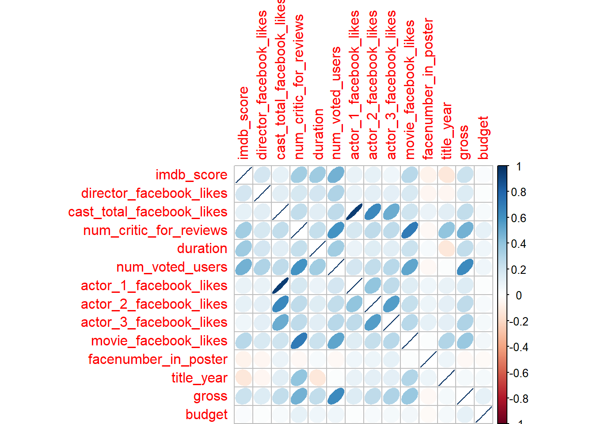
corrplot(M, method = "number")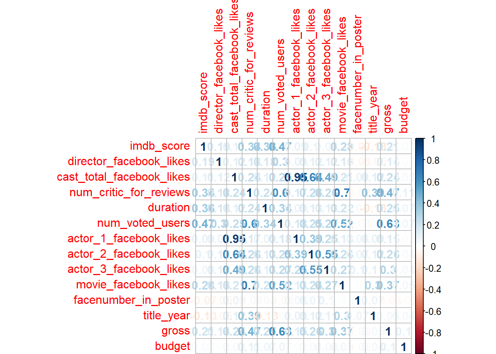
corrplot(M, method = "circle")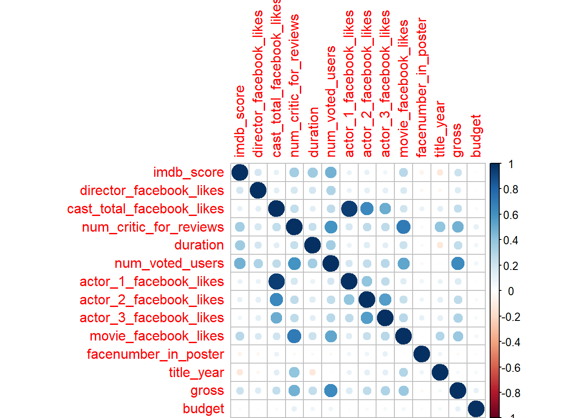
corrplot(M, method = "pie")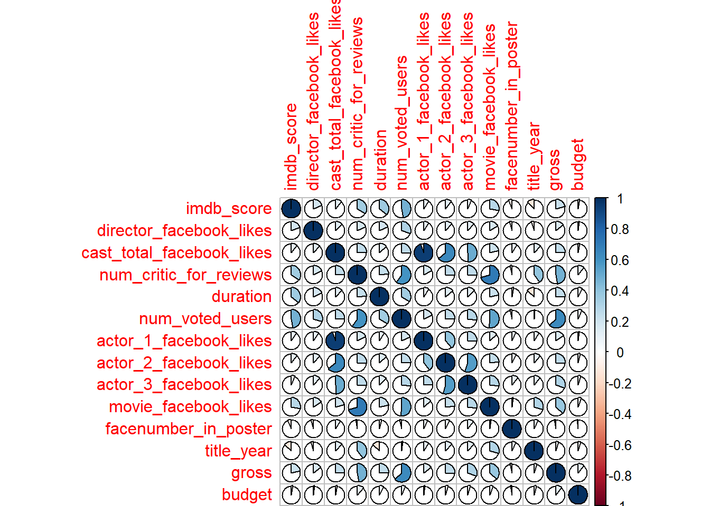
corrplot(M, method = "square")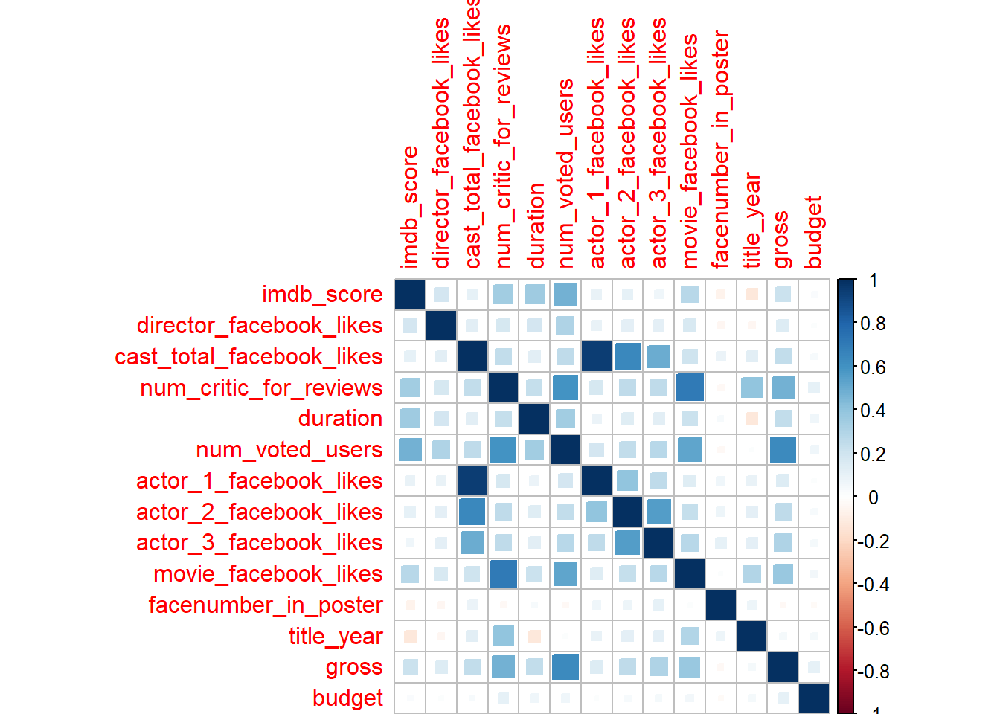